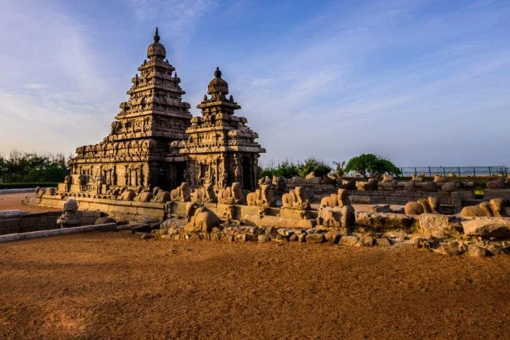
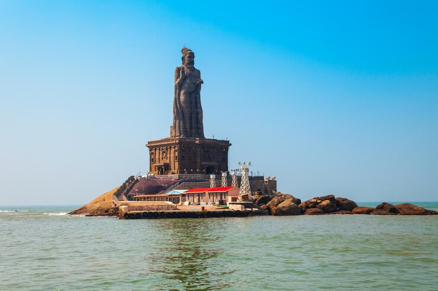
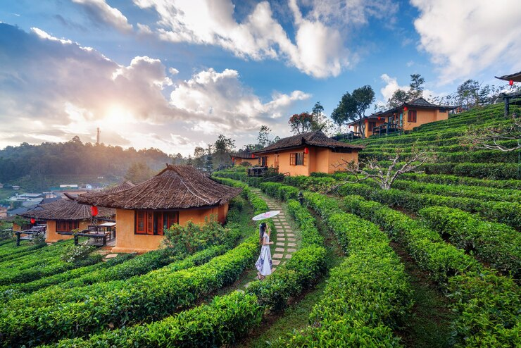
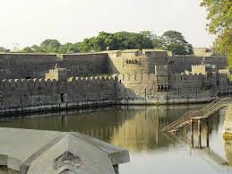
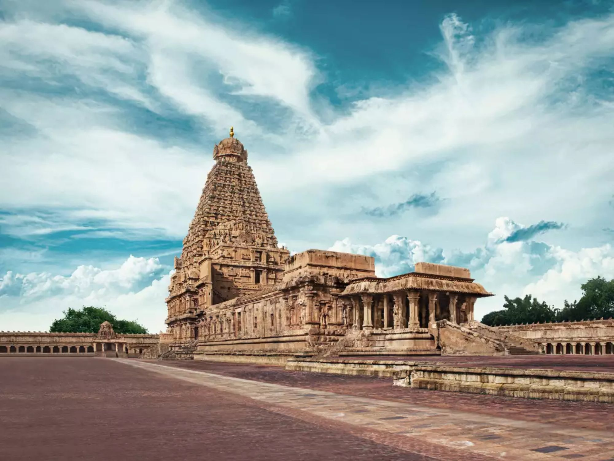
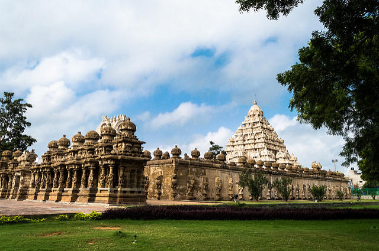
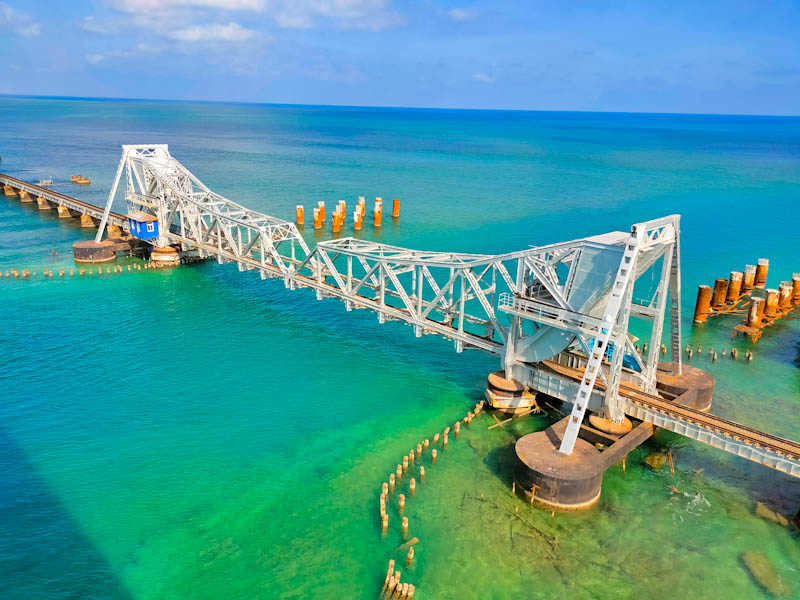

Districts of TamilNadu
-

Chennai
Chennai, on the Bay of Bengal in eastern India, is the capital of the state of Tamil Nadu. The city is home to Fort St. George, built in 1644 and now a museum showcasing the city’s roots as a British military garrison and East India Company trading outpost, when it was called Madras. Religious sites include Kapaleeshwarar Temple, adorned with carved and painted gods, and St. Mary’s, a 17th-century Anglican church.
Explore More -

Mahabalipuram
Mamallapuram, or Mahabalipuram, is a town on a strip of land between the Bay of Bengal and the Great Salt Lake, in the south Indian state of Tamil Nadu. It’s known for its temples and monuments built by the Pallava dynasty in the 7th and 8th centuries. The seafront Shore Temple comprises 3 ornate granite shrines. Krishna’s Butter Ball is a massive boulder balanced on a small hill near the Ganesha Ratha stone temple.
Explore More -

Kanniyakumari
Kanyakumari is a coastal town in the state of Tamil Nadu on India's southern tip. Jutting into the Laccadive Sea, the town was known as Cape Comorin during British rule and is popular for watching sunrise and sunset over the ocean. It's also a noted pilgrimage site thanks to its Bagavathi Amman Temple, dedicated to a consort of Shiva, and its Our Lady of Ransom Church, a center of Indian Catholicism.
Explore More -

Madurai
Madurai is an energetic, ancient city on the Vaigai River in the South Indian state of Tamil Nadu. Its skyline is dominated by the 14 colorful gopurams (gateway towers) of Meenakshi Amman Temple. Covered in bright carvings of Hindu gods, the Dravidian-style temple is a major pilgrimage site. Millions attend the processions and ceremonies of April's Chithirai Festival celebrating Meenakshi and Lord Vishnu.
Explore More -

Kodaikanal
Kodaikanal is a hill town in the southern Indian state of Tamil Nadu. It’s set in an area of granite cliffs, forested valleys, lakes, waterfalls and grassy hills. At 2,000 meters above sea level, the town centers around man-made, star-shaped Kodaikanal Lake, bordered by evergreen forest. Rowing boats can be hired, and hikers and cyclists follow the 5k Lake Road path around the shore.
Explore More -

Ooty
Ooty (short for Udhagamandalam) is a resort town in the Western Ghats mountains, in southern India's Tamil Nadu state. Founded as a British Raj summer resort, it retains a working steam railway line. Other reminders of its colonial past include Stone House, a 19th-century residence, and the circa-1829 St. Stephen’s Church. Its 55-acre Government Botanical Garden lies on the slopes of Doddabetta Peak.
Explore More -

Vellore
Vellore is a city in the state of Tamil Nadu, in southern India. It's known for 16th-century Vellore Fort, with its imposing granite walls and surrounding moat. Inside the fort, the Jalakandeswarar Temple features many ornate sculptures. Nearby, the Government Museum has prehistoric relics and natural history displays. By the Palar River, the Muthu Mandapam memorial houses the tomb of a Tamil leader.
Explore More -

Thanjavur
Thanjavur is a city in the south Indian state of Tamil Nadu. Its many temples include the 11th-century Brihadeeswarar Temple, a vast Chola dynasty–era complex with a frescoed interior. Thanjavur Maratha Palace is home to the centuries-old Saraswathi Mahal Library, with palm-leaf manuscripts, and Thanjavur Art Gallery, with bronze statues. Tamil University Museum displays coins, folk artifacts and musical instruments.
Explore More -

Coimbatore
Coimbatore is a city in the south Indian state of Tamil Nadu. To the northwest is the centuries-old, Dravidian-style Arulmigu Subramaniyaswami Temple, Marudamalai. The colorful and intricately carved Arulmigu Patteeswarar Swamy Temple lies southeast of here. In the center, the Gass Forest Museum has a huge collection of preserved animals and tree trunks. Southeast, birds and butterflies inhabit Singanallur Lake.
Explore More -

Kanchipuram
Kanchipuram, also known as Kanchi, is an ancient city in southern India’s Tamil Nadu state. Considered a holy pilgrimage site by Hindus, it is home to many temples. The 8th-century Kailasanathar Temple, dedicated to Lord Shiva, is a vast complex with intricate sandstone carvings. Ulagalanda Perumal Temple houses a huge statue of Lord Vishnu. A mango tree in the Ekambareswarar Temple courtyard is thought to be sacred.
Explore More -

Rameswaram
Rameswaram is a town on Pamban Island, in the southeast Indian state of Tamil Nadu. It’s known for Ramanathaswamy Temple, a Hindu pilgrimage site with ornate corridors, huge sculpted pillars and sacred water tanks. Devotees bathe in the waters of Agni Theertham, off the beach east of the temple. Gandamadana Parvatham is a hill with island views. A chakra (wheel) here is said to bear an imprint of Lord Rama’s feet.
Explore More -

Tenkasi
Tenkasi is a town and headquarters of the Tenkasi district in Indian state of Tamil Nadu. Being one of the most significant spiritual and cultural places in South Tamilnadu, Tenkasi houses The Kutraleeshwarar temple, one of the five sabhas of Lord Nataraja, an incarnation of Lord Shiva.
Explore More